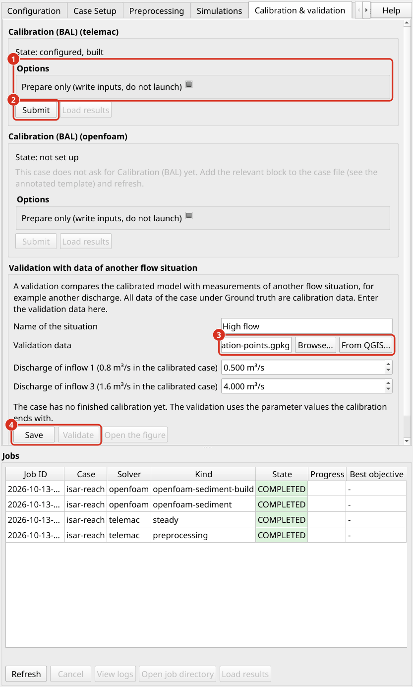

Calage et validation
Un modèle numérique contient des paramètres qui ne peuvent être mesurés directement, surtout la rugosité du lit de la rivière. Calage ajuste ces paramètres jusqu’à ce que le modèle reproduit mesures de terrain. Validation puis teste le modèle étalonné en fonction de mesures qui n’ont pas été utilisées pour le calage. aXqua effectue les deux avec HydroBayesCal.
Deux termes sont utilisés dans cette section. Paramètres de calage sont les entrées incertaines du modèle qui sont ajustées, par exemple la rugosité d’une zone. Cibles de calage sont les quantités mesurées que le modèle est comparé, par exemple la hauteur d’eau aux points étudiés.
Introduction au calage bayésien
Un calage par essai et erreur se termine avec un ensemble de valeurs de paramètre et aucune déclaration sur la fiabilité de ces valeurs. Bayesian calage répond à une question plus utile : quelles valeurs de paramètre sont probables compte tenu des mesures et de leurs erreurs ?
L’utilisateur indique pour chaque paramètre de calage la plage dans laquelle sa valeur réelle est attendue. Cette gamme est la distribution a priori. Le théorème de Bayes combine la distribution a priori avec les mesures. Les valeurs de paramètres avec lesquelles le modèle reproduit les mesures deviennent plus probables, et toutes les autres deviennent moins probables. Le résultat est la distribution a posteriori de chaque paramètre. Une distribution étroite A Posteriori indique que les mesures déterminent bien le paramètre. Une distribution a posteriori aussi large que la distribution a priori indique que les mesures ne contiennent aucune information sur ce paramètre.
L’évaluation directe du théorème de Bayes nécessite plusieurs milliers de parcours de modèles, ce qui n’est pas possible pour un modèle qui fonctionne pendant des heures. HydroBayesCal remplace donc le modèle par un modèle de substitution, dans les étapes suivantes :
Le modèle numérique est exécuté pour un nombre limité de combinaisons de paramètres réparties sur les plages distribution a priori (30 par défaut).
Un émulateur de processus gaussien est formé avec ces pistes. L’émulateur est un modèle statistique qui prédit le résultat du modèle numérique pour toute combinaison de paramètres dans une fraction de seconde, ainsi que l’incertitude de sa propre prédiction (Rasmussen et Williams, 2006).
L’émulateur est évalué pour des milliers de combinaisons de paramètres pour calculer la distribution a posteriori.
Bayesian active learning sélectionne la combinaison de paramètres à laquelle un tour supplémentaire du modèle numérique améliore le plus l’émulateur. Le modèle est exécuté pour cette combinaison, et l’émulateur est à nouveau formé (Oladyshkin et al. 2020).
Les étapes 3 et 4 sont répétées jusqu’à ce que le nombre d’exécutions sélectionné soit atteint (50 par défaut).
De cette façon, quelques dizaines de modèles sont suffisants où un calage bayésien direct nécessiterait des milliers. Les applications aux modèles de réservoir sont documentées par Mouris et al. (2023) et Schwindt et al. (2023).
Vérité terrain configuration des données
Les mesures de terrain sont appelées vérité terrain. aXqua les accepte dans un cahier avec une structure fixe, qui s’appelle le modèle cible de calage. Créez-le pour un cas avec :
axqua targets <case-file>
La commande écrit le manuel calibration-target-data.xlsx dans user-sources/ground-truth/. Ses feuilles sont :
Feuille |
Contenu |
|---|---|
|
Une rangée par point de mesure : composants de vitesse, leurs fluctuations, hauteur d’eau et cote du fond. L’amplitude de la vitesse et l’énergie cinétique turbulente sont calculées par des formules dans la feuille. |
|
Tailles des grains (d16 à d90) et la fraction de sédiments fins par échantillon. Le changement de lit mesuré est rempli automatiquement à partir du MNT de la différence (Simulation morphodynamique). |
|
Les paramètres de calage avec leurs limites inférieure et supérieure, sélectionnés dans une liste de paramètres disponibles TELEMAC et GAIA. |
Chaque rangée porte une carte d’identité. Les positions des mesures sont lues à partir d’un couche de points contenant les mêmes identifiants, de sorte que les coordonnées ne doivent pas être dactylographiées. Entrez le cahier et le couches de points dans le fichier de cas:
ground_truth:
targets:
file: user-sources/ground-truth/calibration-target-data.xlsx
hydraulics_positions: user-sources/geodata/measurement-points.gpkg
sediment_positions: user-sources/geodata/sediment-samples.gpkg
join_key: ID
Répétez ensuite le prétraitement, qui compile les mesures dans les tableaux que le calage lit. Les ID doivent être uniques dans une feuille. Les mesures de plusieurs jours d’enquête dont la numérotation redémarre à zéro nécessitent donc des ID distincts.
Il existe deux alternatives au cahier. ground_truth.measurements nomme une table que l’utilisateur a compilée, avec les coordonnées x, y et z dans les trois premières colonnes et une colonne par quantité mesurée. ground_truth.sources liste les fichiers d’instrument d’origine ainsi que les couche de points de leurs positions, qu’aXqua compile dans une telle table.
Mesures dans une couche ou une table. Si les valeurs mesurées et leurs positions existent déjà dans un fichier, ce fichier est suffisant. Entrez-le comme source du genre points:
ground_truth:
sources:
- category: hydraulics
kind: points
positions: user-sources/ground-truth/velocity-measurements.gpkg
Le fichier est une couche de points (GeoPackage, shapefile ou GeoJSON) dans n’importe quel système de coordonnées de référence, ou une table (CSV ou Excel workbook) avec les colonnes x et y dans le système de coordonnées de référence du cas. aXqua reconnaît les noms de colonnes suivants, dans majuscules ou minuscules et avec ou sans unité entre crochets ou entre parenthèses, par exemple v(x) [m/s] ou v_x (m/s):
Quantité |
Noms des colonnes |
|---|---|
Coordonnées d’un tableau |
|
Composants de vélocité en m/s |
|
Total hauteur d’eau en m |
|
Profondeur d’une lecture sous la surface libre en m |
|
L’amplitude de la vitesse comparée au modèle est calculée à partir des composantes horizontales. Si un couche contient plusieurs lectures à une position, aXqua utilise la lecture la plus proche de 0,6 de la hauteur d’eau sous la surface, ce qui correspond à la vitesse moyenne de profondeur. Les points situés en dehors du contour du modèle sont exclus du calage. Dans le extension, les fichiers sont inscrits dans les paramètres cas (Open case settings… sur l’onglet Case Setup), page Calibration and validation, dans le tableau Measurement files du cadre Measurements. Add file… ajoute un couche de points ou une table, et la colonne Use for assigne chaque fichier à calage ou à la validation. Un fichier pour la validation a besoin du nom de son situation d’écoulement et de son débit (situation de validation).
Les mesures de vélocité avec un SonTek FlowTracker2 sont transférées dans la feuille hydraulics avec le script extract_flowtracker.py, qui aXqua place à côté du cahier de travail. Notez que la fluctuation de vitesse est l’écart type des échantillons de vitesse. Ce n’est pas la colonne VxErr de l’exportation de l’instrument, qui est l’erreur standard de la vitesse moyenne.
Calage bayésien & configuration de validation
Le bloc calibration du fichier de cas définit ce qui est étalonné en fonction des mesures :
calibration:
calibration_quantities: ["WATER DEPTH"]
extraction_quantities: ["WATER DEPTH", "SCALAR VELOCITY"]
measurement_error: 0.10 # used where no measured error is available
init_runs: 30 # runs for the first training of the emulator
max_runs: 50 # total number of runs
parameters:
- {name: zone1, min: 0.05, max: 0.50} # ks of roughness zone 1 [m]
- {name: zone2, min: 0.10, max: 1.00} # ks of roughness zone 2 [m]
calibration_quantities sont les cibles de calage. Les noms sont ceux des variables de résultat de TELEMAC : WATER DEPTH, SCALAR VELOCITY, TURBULENT ENERG. (exige le k-epsilon modèle de turbulence) et CUMUL BED EVOL (exige GAIA).
parameters liste les paramètres de calage avec les limites de leurs gammes distribution a priori. Le nom zone<N> se réfère à la rugosité de la zone N. Un nom qui commence par gaia se réfère à un mot clé GAIA, par exemple gaiaCLASSES SHIELDS PARAMETERS 1 pour le paramètre critique Shields de la première classe taille des grains. Les paramètres sélectionnés dans la feuille parameters du cahier sont ajoutés à cette liste.
Sélectionnez des limites larges mais physiquement plausibles. Si le distribution a posteriori d’un paramètre s’accumule à l’une de ses limites, la vraie valeur se trouve probablement en dehors de la plage, et le calage doit être répété avec une plage plus large.
Validation. Une validation examine si les paramètres étalonnés décrivent le tronçon, ou seulement le jour où les données calage ont été mesurées. Il faut donc des mesures que le calage n’a pas utilisées et qui découlent de un autre situation d’écoulement: un autre débit, mesurées dans une autre enquête.
Toutes les mesures du bloc ground_truth sont des données calage. aXqua n’en retient pas une partie pour une validation. Les mesures d’un relevé sont prises en quelques heures dans un champ de débit, et les points voisins ne sont donc pas indépendants les uns des autres. Un modèle qui prédit certains de ces points à partir des autres (validation croisée gauche-un-out, validation croisée k-fold ou part aléatoire) démontre qu’il interpole dans ce champ de flux. Il ne démontre pas que ses valeurs de rugosité tiennent à un autre débit, où d’autres parties du lit sont mouillées et d’autres éléments de rugosité sont submergés.
Les données de validation sont définies dans le fichier de cas comme un Situation actuelle, avec ses mesures et ses valeurs frontière :
calibration:
validation:
- name: September 2025
inflows: {1: 0.2, 3: 5.1} # discharge [m3/s] per inflow of the model
sources:
- category: hydraulics
kind: points
positions: user-sources/ground-truth/september.gpkg
Entrée |
Signification |
|---|---|
|
Un bref nom de la situation. Il nomme les fichiers de la validation. |
|
Les mesures, sous la forme des sources du bloc |
|
Le débit total de la situation en m3/s. Pour un modèle avec plusieurs entrées, le débit est réparti entre eux dans les proportions du cas étalonné. |
|
Le débit de chaque entrée en m3/s, pour un tronçon dont les branches transportaient une autre part du débit. Les entrées sont identifiées par le nombre de leur frontière liquide. |
|
Le niveau d’eau à la sortie en m, pour un cas avec |
|
Le temps simulé en secondes, s’il diffère de celui du cas. |
Dans le extension. L’onglet Calibration & validation a la boîte Validation with data of another flow situation. Sélectionnez le couche de points avec les données de validation avec Browse…, ou avec From QGIS… à partir du couches de points qui sont ouverts dans QGIS. Entrez le débit de chaque afflux : la boîte liste les entrées du modèle avec le débit de la calibrée cas. Save écrit la situation dans le fichier de cas. Les mêmes situations apparaissent dans les paramètres cas (Open case settings…, page Calibration and validation) : dans le tableau Measurement files, chaque fichier dont la colonne Use for dit Validation appartient à la situation nommée dans la colonne Situation, avec la débit de cette situation. Le débit appartient à la situation, de sorte qu’un changement dans une ligne le modifie dans chaque ligne de cette situation, et un chemin dans les colonnes File et Positions peut être corrigé en place. Les paramètres d’une situation que la table ne montre pas, comme le débit de chaque entrée, sont conservés.
Lancer HydroBayesCal
Le calage nécessite le paquet supplémentaire HydroBayesCal (Extension de QGIS) et un cas construit avec un Permanent Simulation En Régime. Chaque exécution du calage répète cette simulation en régime permanent avec un autre jeu de valeurs de paramètres.
Dans l’extension, cliquez sur Submit sur l’onglet Calibration & validation. L’option Prepare only écrit tous les fichiers d’entrée sans commencer les lancers, afin qu’ils puissent être inspectés en premier. Dans un terminal:
axqua submit <case-file> --kind calibration --option prepare_only=true
axqua submit <case-file> --kind calibration


L’onglet Calibration & validation pour un cas avec des mesures. (1) L’option Prepare only. (2) Submit commence le calage. (3) Les mesures de la situation de validation, sélectionnées comme un fichier ou à partir des couches qui sont ouverts dans QGIS, et ci-dessous le débit de chaque afflux dans cette situation. (4) Save stocke la situation de validation dans le fichier de cas, et Validate la gère.
Le temps de calcul est approximativement le nombre de runs (max_runs) multiplié par la durée d’une simulation en régime permanent. La liste tâche indique le numéro de la course en cours, par exemple iter 5/12.
HydroBayesCal effectue ses parcours dans le dossier du cas construit (axqua-case/simulation/) et écrit chaque ensemble testé de valeurs de paramètre dans la table de friction et le fichier de paramètres là. aXqua restaure les deux fichiers lorsque le calage se termine, de sorte qu’une simulation ultérieure utilise le cas tel qu’il a été construit. Pour la même raison, les tâches d’un cas courent l’une après l’autre : une tâche qui est soumise pendant un calage attend jusqu’à la fin du calage. Le dossier cases/example-isar/ du dépôt contient un exemple complet avec un temps d’exécution d’environ une demi-heure, y compris un guide étape par étape pour l’extension.
Variation. Après le calage, cliquez sur Validate dans la boîte Validation with data of another flow situation, ou soumettez la tâche à terminal:
axqua submit <case-file> --kind validation
La validation exécute le modèle étalonné avec les valeurs frontière de la situation de validation. Son fichier de paramètres est dérivé de celui du built cas et ne diffère que dans les valeurs prescrites débits et niveaux d’eau, dans les noms de ses propres fichiers de résultats, et dans les paramètres calibrés. Le maillage et tous les autres paramètres sont ceux du modèle étalonné, de sorte qu’une différence entre le modèle et la mesure ne peut pas découler d’un modèle qui a été construit différemment. Les valeurs calibrées sont la combinaison la plus probable de distribution a posteriori (le joint distribution a posteriori maximum) de la dernière calage. Les fichiers de la compilation cas et le résultat de la simulation en régime permanent ne sont pas modifiés.
aXqua lit ensuite le modèle aux points de validation et écrit trois fichiers dans axqua-case/calibration-validation/validation/: une table avec la valeur mesurée et la valeur modélisée à chaque point (validation-<name>.csv), un résumé (validation-<name>.json) et une figure du modèle par rapport aux valeurs mesurées (validation-<name>.png). Les points de mesure en dehors du modèle sont comptés et exclus.
Plusieurs débits. Les valeurs de rugosité qui ont été étalonnées à un débit ne sont pas nécessairement valables à un autre. Le script run_Bayes_cal_multiflow.py dans le dossier cas étalonne un ensemble commun de paramètres par rapport aux mesures à plusieurs débits. Exécutez-le d’abord avec --smoke. Ce court test avec trois tours vérifie la chaîne complète avant que les jours de calcul ne soient passés.
OpenFAM. Un modèle OpenFOAM peut être étalonné par rapport aux composants de vitesse mesurés avec le script run_Bayes_cal_openfoam.py. Parce qu’un calage nécessite des dizaines de runs, ils sont exécutés avec un maillage grossier en mode rigid-lid. Le script openfoam_verify_posterior.py répète ensuite le cas calibré en pleine résolution en mode vof. La rugosité d’un modèle OpenFOAM est étalonnée comme une valeur pour tout le lit. Il n’est donc pas comparable aux valeurs de rugosité par zone d’un calage TELEMAC.
Analyse de la qualité
HydroBayesCal writes its results into the folder auto-saved-results-HydroBayesCal within axqua-case/calibration-validation/. Assess a calibration in four steps:
L’apprentissage actif a-t-il convergé? HydroBayesCal enregistre deux indicateurs après chaque itération. Les données du modèle bayésien (BME) indiquent à quel point le modèle reproduit les mesures en moyenne sur les plages de paramètres. L’entropie relative (RE) exprime combien d’informations les mesures ajoutées à la distribution a priori. Les deux devraient se stabiliser vers la fin du calage. Si elles changent encore fortement, augmentez
max_runs.La distribution A est-elle plus étroite que la distribution a priori? Comparer les deux distributions de chaque paramètre. Une distribution a posteriori qui est nettement plus étroite que la distribution a priori et se trouve à l’intérieur de la plage identifie le paramètre. Une distribution a posteriori à une limite de la gamme nécessite une gamme plus large. Une distribution a posteriori qui ressemble à la distribution a priori signifie que les mesures ne limitent pas ce paramètre.
Le modèle étalonné reproduit-il le cibles de calage? Le paramètre étalonné est la combinaison la plus probable de distribution a posteriori. HydroBayesCal compare les résultats du modèle pour cet ensemble avec les mesures. Vérifiez si les différences restantes sont de la taille des erreurs de mesure, et si elles sont distribuées au hasard ou concentrées dans une partie du tronçon. Un écart systématique indique une erreur dans le modèle, par exemple dans les données de terrain ou le conditions aux limites, qu’aucune valeur de paramètre ne peut compenser.
Le modèle étalonné reproduit-il des données indépendantes? Exécuter la validation (exécution de validation). Les différences sont généralement un peu plus grandes que pour les cibles de calage. Des différences beaucoup plus grandes indiquent que le calage a compensé les erreurs de la structure du modèle à travers les paramètres.
La validation fait état des statistiques suivantes pour chaque quantité, par exemple la vitesse d’écoulement et la hauteur d’eau :
Statistique |
Signification |
|---|---|
Nombre de points |
Les points de validation sur le maillage du modèle. Les points à l’extérieur du modèle et les points qui sont secs dans le modèle bien que l’eau ait été mesurée sont signalés séparément. |
Brise |
La moyenne du modèle moins les valeurs mesurées. Un biais négatif de la vitesse signifie que le modèle est trop lent en moyenne. Le biais relatif se réfère à la valeur moyenne mesurée. |
Erreur carrée moyenne racine (RMSE) |
La différence typique entre le modèle et la mesure à un moment donné. Il contient le biais et la dispersion. |
Erreur absolue moyenne |
L’ampleur moyenne des différences, qui est moins sensible aux grandes différences individuelles que la RMSE. |
Corrélation |
Le coefficient de corrélation entre les valeurs modélisées et mesurées. Une corrélation élevée avec un biais important indique un motif spatial correct à un mauvais niveau. |
Partager dans l’erreur de mesure |
La part des points où le modèle et la mesure ne diffèrent que par l’erreur de la mesure. L’erreur est celle de l’instrument combiné avec le relatif |
La validation indique également la différence restante entre les entrées et les sorties à la fin de son cycle. Si cette différence dépasse la tolérance du cas, la course n’avait pas atteint un régime permanent, et le duration de la situation de validation doit être augmenté.
Le HydroBayeCal documentation décrit les fichiers de résultats et les chiffres en détail.
Références
Mouris, K., Acuña Espinoza, E., Schwindt, S., Mohammadi, F., Haun, S., Wieprecht, S., and Oladyshkin, S. (2023). « Stability criteria for Bayesian calibration of reservoir sedimentation models. » Modeling Earth Systems and Environment, 9, 3643-3661. doi:10.1007/s40808-023-01712-7
Oladyshkin, S., Mohammadi, F., Kroeker, I., and Nowak, W. (2020). « Bayesian3 active learning for the Gaussian process emulator using information theory. » Entropy, 22(8), 890. doi:10.3390/e22080890
Rasmussen, C. E., and Williams, C. K. I. (2006). Gaussian processes for machine learning. MIT Press.
Schwindt, S., Callau Medrano, S., Mouris, K., Beckers, F., Haun, S., Nowak, W., Wieprecht, S., and Oladyshkin, S. (2023). « Bayesian calibration points to misconceptions in three-dimensional hydrodynamic reservoir modeling. » Water Resources Research, 59(3), e2022WR033660. doi:10.1029/2022WR033660